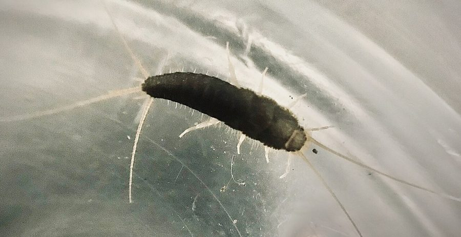

रजत मछलीLong-tailed Silverfish
Ctenolepisma longicaudatum · Ctenolepismatidae · INS-0171

- Scientific name वैज्ञानिक नाम
- Ctenolepisma longicaudatum (Escherich, 1905)
- Family कुल
- Ctenolepismatidae
- Hindi हिंदी
- रजत मछली
- Local names स्थानीय नाम
- rajat machhli, silverfish, silver fish, long tailed silverfish
- Status here यहाँ की स्थिति
- native
- Movement आवागमन
- Resident, here all year
- Known from कहाँ दर्ज
- Others have published records from the wider Awadh–Purvanchal plain, none yet from Basti–Ayodhya अवध–पूर्वांचल से दूसरों के प्रकाशित अभिलेख, बस्ती–अयोध्या से अभी नहीं
- IUCN IUCN
- not evaluated
- Review समीक्षा
- audited and independently read
When to look कब देखें
Present all year. साल भर मौजूद।
रजत मछली / Long-tailed Silverfish
Ctenolepisma longicaudatum (Escherich, 1905) — Ctenolepismatidae
रजत मछली — चाँदी जैसी चमकदार, लंबी पूँछ वाली सफ़ेद कीट जो घरों में, रसोई में छिपी रहती है। गीली, अँधेरी जगह पसंद है। कपड़े, किताबें, मसाले सब कुछ खा सकती है। रात को निकलती है और अनाज, स्टार्च वाली चीजें खाती है। भारत में और दुनिया भर में घरों में आ गई है।
Quick Identification त्वरित पहचान
| Feature | Description |
|---|---|
| Size | Body 8–14 mm long; tail filaments add 5–8 mm |
| Colour | Silver or grey-white, metallic sheen |
| Body shape | Elongate, flattened; tapers toward rear |
| Tail | Three long filaments (cerci and median filament), nearly as long as body |
| Antennae | Long, segmented; often as long as body |
| Legs | Six short legs; body appears to glide |
| Movement | Rapid, darting movement; prefers dark and damp |
Field tip: Look in kitchens, storerooms, and damp basements at night. The long tail filaments and silver sheen are diagnostic. Fast runners that flee when disturbed. Often seen in cardboard boxes, grain stores, and paper stacks.
हिंदी — कैसे पहचानें: रोशनी के बगल में अँधेरी जगह, रसोई या गोदाम में देखो। चाँदी जैसी चमकदार कीट, तेजी से दौड़ती है। लंबी पूँछ।
Morphology आकारिकी
Biometrics:
| Measurement | Range |
|---|---|
| Body length (without tail) | 8–14 mm |
| Tail filaments | 5–8 mm |
| Antennae length | 8–12 mm |
| Width | 2–3 mm |
Structure: Elongate, dorsoventrally flattened body covered with fine scales that give the metallic silver appearance. Head is small with long segmented antennae. Compound eyes are large. The body tapers posteriorly and terminates in three long, segmented filaments (cerci and a median caudal filament), giving the insect its common name. Six legs are present, short and slender. The integument is smooth and scaleless on some segments, scaled on others. No wings in any life stage.
Scales: The body is clothed in overlapping scales that refract light, producing the characteristic iridescent silver-white or grey colour. These scales are easily shed when handled.
Behaviour & Ecology व्यवहार और पारिस्थितिकी
A cosmopolitan, synanthropic (human-associated) insect found indoors worldwide. Prefers warm, humid environments and is attracted to kitchens, storage areas, and damp basements. Nocturnal: remains hidden during the day in cracks, crevices, and dark corners, emerging at night to forage. Feeds on a wide range of materials: starches, cereals, flour, dried plant matter, paper, and cardboard. Can damage foodstuffs, books, and paper goods in storage. Can survive for months without food but requires humidity.
Outdoors (in warmer regions) may be found under bark or in leaf litter, but in temperate and cooler zones, it is almost entirely confined to human buildings. The species has spread globally via trade in grain and food commodities.
हिंदी: रात को निकलता है। सूखी जगह में नहीं रह सकता, नमी चाहिए। अनाज, मसाले, किताबें सब खाता है।
Life Cycle / Phenology जीवन चक्र
| Stage | Duration |
|---|---|
| Egg | 7–10 days (in humid conditions) |
| Nymph (multiple instars, 6–8) | 2–3 months total |
| Adult lifespan | 2–3 years |
| Egg-to-adult | 2–3 months under ideal conditions |
Temperature dependence: Development is rapid at 22–26°C with high humidity (above 70%). At lower humidity or cooler temperatures, development slows or ceases. No dormancy; reproduction continues year-round indoors.
Reproduction: Females lay small clusters of eggs in crevices. Males perform elaborate courtship displays involving sperm transfer. Reproduction can be slow; populations build over months.
Host Plants or Prey आहार
Food sources:
- Starches and carbohydrates: flour, cereals, rice
- Dried plant materials: leaves, paper, cardboard
- Animal proteins: stored dry foods, dried insects
- Fungi and moulds: feeds on decomposing organic matter
- Cloth: cellulose-rich fabrics, cotton
Feeding: All stages feed on the same materials. Both nymphs and adults are detritivorous, consuming whatever starch and plant-based material is available in the building.
Predators / Natural Enemies शत्रु
- Spiders: Small hunting spiders in buildings
- Centipedes: Predatory centipedes may attack nymphs
- Parasitoid wasps: Small parasitoids may attack eggs and nymphs
- Ants: Building-dwelling ants may prey on eggs and nymphs
Agricultural / Human Relevance कृषि प्रासंगिकता
Household pest. Long-tailed Silverfish is a common pest of stored foods, grains, cereals, and flour. It can cause significant damage to stored goods in warehouses, grain stores, and kitchens. The insects leave characteristic notches and grazing marks on food packages. In homes, they may damage wallpaper, bindings of books, and paper documents. The presence of faecal pellets and shed skins indicates infestation.
Management. Control relies on reducing humidity (keeping kitchens and storage areas dry), sealing cracks and crevices where insects hide, removing food sources (proper storage of grain and flour in airtight containers), and using insecticidal sprays or diatomaceous earth in storage areas if necessary. The species does not transmit disease but is an indicator of poor hygiene and moisture problems.
हिंदी: गोदाम और किचन में नुकसान करता है। नम जगह में ज़्यादा होता है। सूखा रखो, डिब्बों में बंद करके रखो तो नहीं आएगा।
Expected Locally स्थानीय रूप से अपेक्षित
Not a field record. Written from published accounts for eastern Uttar Pradesh. No confirmed local sighting yet — if you have seen it, that is what the atlas needs.
अभी तक स्थानीय पुष्टि नहीं। यह विवरण प्रकाशित स्रोतों से है, किसी अवलोकन से नहीं।
Expected in kitchens, storage areas, and damp basements throughout Basti district and eastern UP. The presence of the insect indicates warm, humid indoor conditions. A specimen collected from a kitchen or grain store with date and location would confirm a local record.
Distribution वितरण
Global range: Cosmopolitan; found on all inhabited continents except Antarctica. Native to the Mediterranean region; now established worldwide via trade.
In India: Present in all states; common in urban and semi-urban areas.
In Uttar Pradesh: Present in all cities and towns; expected in storage facilities and homes.
In Basti district / eastern UP: Expected in all buildings with grain storage or food preparation, particularly where conditions are warm and humid.
Research Questions शोध प्रश्न
- What is the relative humidity threshold below which Ctenolepisma longicaudatum cannot reproduce or survive? — Maintain colonies at different humidities; record survival and reproduction.
- Does the species show a preference for any particular stored grain or flour over others? / क्या यह कीट किसी खास अनाज को ज़्यादा पसंद करती है? — Offer multiple food types; measure consumption rates.
- How long does a population persist in a completely sealed, food-free container? — Seal insects without food; record survival time.
- Can diatomaceous earth application reduce silverfish populations in grain stores? — Apply food-grade diatomaceous earth; monitor population changes.
- What structural modifications (ventilation, humidity control) most effectively prevent infestations in storage buildings? — Survey buildings with different designs.
Similar Species मिलती-जुलती प्रजातियाँ
| Species | How to tell apart | हिंदी |
|---|---|---|
| Thermobia domestica (Fire-brat) | Darker brown or reddish, prefers very hot areas; tail shorter relative to body | गहरे रंग की, गर्म जगह पसंद |
| Firebrats and other Zygentoma | Brownish, different habitats; lack the long tail filaments | भूरी, छोटी पूँछ |
| Dust lice and psocids | Smaller (2–3 mm), different body shape, found on paper and damp wood | बहुत छोटे, अलग दिख |
Field rule: Silver-white, elongate insect (8–14 mm) with three long tail filaments and long antennae, found in damp kitchens or storage areas and moving rapidly: Long-tailed Silverfish.
Taxonomy & Classification वर्गीकरण
Original description. Described by Escherich in 1905 as Ctenolepisma longicaudatum from European specimens. The species was distinguished by the length of its tail filaments.
Subspecies. Monotypic; no subspecies are recognised.
Family and order placement. Order Zygentoma (silverfish and firebrats), family Ctenolepismatidae. The Zygentoma are among the most basal insects, with lineages dating to the Paleozoic era.
Phylogenetic notes. Ctenolepisma is a genus of six recognised species; C. longicaudatum is the most cosmopolitan. Recent molecular work indicates that several cryptic species may be lumped under this name, but formal revision is pending.
IUCN status rationale. Not evaluated. A common household pest of little conservation concern.
Photo Gallery फोटो गैलरी
Photos needed आवश्यक फोटो
- [ ] Live silverfish on a surface, showing silver colour and tail filaments (रजत मछली)
- [ ] Damaged grain or flour package (खराब अनाज)
- [ ] Silverfish on food store paper (पेपर पर कीट)
No photos yet — add field photos to media/species/long_tailed_silverfish/ and run node scripts/sync_photos.js.
References संदर्भ
- Escherich, K. (1905). Neue Thysanuren und Collembolen. Zoologische Jahrbücher, Abteilung für Systematik 22: 621–638.
- Zhu, G.H., Jin, J. & Yip, J. (2010). Stored product pests in China: biology and management. Chinese Journal of Applied Entomology 47(5): 1005–1011.
- Buckland, P.I. & Buckland, P.C. (2006). Bugs Coleoptera and other arthropods. Journal of Archaeological Science 33: 1542–1550.
- Hickin, N.E. (1975). The Insect Factor in Wood Decay. Associated Business Press, London.
- Zhu, G.H., Jin, J., Gui, Z.Z. & Yao, Z. (2009). Pest populations in stored products and their management in China. Grain Storage 38(2): 46–51.
- GBIF Occurrence Data — Ctenolepisma longicaudatum, Asia (2024).
Source file: species/fauna/insects/long_tailed_silverfish.md